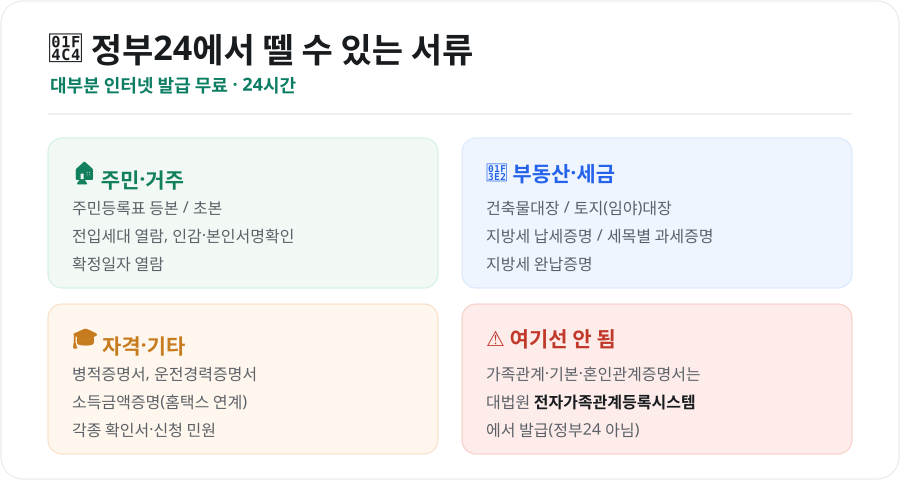

N
네이버 실시간
G
구글 실시간
키워드픽 블로그 — 지금 뜨는 이슈 깊이 보기
전체 글 보기 →키워드픽은 매일 구글·네이버에서 화제가 되는 검색어를 살펴보고, 그 배경과 맥락을 직접 정리해 알기 쉽게 풀어 씁니다. 단순 순위 나열이 아니라 ‘왜 이 키워드가 떴는지’, ‘무엇을 알아두면 좋은지’까지 담았습니다.

생활정부24 민원 발급(무료)정부24(gov.kr)에서 주민등록등본·건축물대장·납세증명 등을 무료로 인터넷 발급하는 방법, 발급 가능한 서류, 무인민원발급기·방문 발급 비교, 그리고 가족관계증명서 발급처까지 정리했습니다.2026-08-03 기타가족관계증명서 인터넷 무료 발급가족관계증명서를 집에서 무료로 발급받는 방법을 정리했습니다. 인터넷 발급 절차, 일반·상세·특정 증명서 차이, 무인발급기·주민센터 발급, 자주 겪는 오류 해결까지 한 번에 확인하세요.2026-07-24
기타가족관계증명서 인터넷 무료 발급가족관계증명서를 집에서 무료로 발급받는 방법을 정리했습니다. 인터넷 발급 절차, 일반·상세·특정 증명서 차이, 무인발급기·주민센터 발급, 자주 겪는 오류 해결까지 한 번에 확인하세요.2026-07-24 생활4대보험 가입자명부 발급 방법 — 4대사회보험 정보연계센터에서 3분 만에4대보험 가입자명부(사업장 가입자명부)는 4대사회보험 정보연계센터에서 사업장 공동인증서로 발급합니다. 발급 5단계와 개인 가입내역확인서와의 차이를 그림과 함께 정리하고, 바로가기도 넣었습니다.2026-08-07
생활4대보험 가입자명부 발급 방법 — 4대사회보험 정보연계센터에서 3분 만에4대보험 가입자명부(사업장 가입자명부)는 4대사회보험 정보연계센터에서 사업장 공동인증서로 발급합니다. 발급 5단계와 개인 가입내역확인서와의 차이를 그림과 함께 정리하고, 바로가기도 넣었습니다.2026-08-07 생활주민등록 사실조사, 정부24 앱으로 3분 끝내기 (2026) — 방법·기간·과태료2026년 주민등록 사실조사, 정부24 앱으로 집에서 3분이면 끝납니다. 비대면 기간(7/20~9/7)·참여 방법·과태료(10~50만원)·방문조사 일정을 그림과 함께 정리하고, 정부24 바로가기도 넣었습니다.2026-08-05생활본인부담상한제생활본인부담상한제 — 작년에 낸 병원비, 돌려받을 수 있습니다 (2026년 신청)1년간 낸 병원비가 소득 구간별 상한액을 넘으면 초과분을 돌려줍니다. 2025년 진료분 환급 안내가 2026년 8월 말부터 시작 — 대상·신청 방법·지급까지 정리했습니다.2026-08-05생활보이스피싱 대처법생활보이스피싱 최신 수법과 대처법 — 이런 전화는 100% 사기입니다검찰·금감원 사칭, 저금리 대출 빙자, 가족 사칭까지 — 2026년 보이스피싱 최신 수법과 당했을 때 돈을 지키는 대처 순서(112·1332·지급정지)를 정리했습니다.2026-08-05
생활주민등록 사실조사, 정부24 앱으로 3분 끝내기 (2026) — 방법·기간·과태료2026년 주민등록 사실조사, 정부24 앱으로 집에서 3분이면 끝납니다. 비대면 기간(7/20~9/7)·참여 방법·과태료(10~50만원)·방문조사 일정을 그림과 함께 정리하고, 정부24 바로가기도 넣었습니다.2026-08-05생활본인부담상한제생활본인부담상한제 — 작년에 낸 병원비, 돌려받을 수 있습니다 (2026년 신청)1년간 낸 병원비가 소득 구간별 상한액을 넘으면 초과분을 돌려줍니다. 2025년 진료분 환급 안내가 2026년 8월 말부터 시작 — 대상·신청 방법·지급까지 정리했습니다.2026-08-05생활보이스피싱 대처법생활보이스피싱 최신 수법과 대처법 — 이런 전화는 100% 사기입니다검찰·금감원 사칭, 저금리 대출 빙자, 가족 사칭까지 — 2026년 보이스피싱 최신 수법과 당했을 때 돈을 지키는 대처 순서(112·1332·지급정지)를 정리했습니다.2026-08-05 생활고유가 피해지원금, 8월 31일 지나면 잔액 소멸 — 지금 잔액부터 확인하세요고유가 피해지원금은 2026년 8월 31일 24시까지 쓰지 않으면 남은 잔액이 자동 소멸됩니다(환불 없음). 잔액 확인법과 사용처, 놓치기 쉬운 점을 정리했습니다.2026-08-04생활이사 체크리스트생활이사 준비 체크리스트 — D-30부터 이사 당일까지, 빠뜨리기 쉬운 것들이사 한 달 전부터 당일까지 순서대로 정리한 이사 준비 체크리스트. 전입신고·관리비 정산·도시가스 이전처럼 깜빡하기 쉬운 것까지 챙겼습니다.2026-08-04생활주택청약 종합저축생활주택청약 종합저축, 이것만 알면 끝 — 자주 묻는 질문 10가지월 얼마 넣어야 하나, 25만원이 뭐길래, 소득공제는 얼마, 1순위 조건은? 주택청약 종합저축에서 가장 많이 묻는 질문 10가지를 문답으로 풀었습니다.2026-08-04
생활고유가 피해지원금, 8월 31일 지나면 잔액 소멸 — 지금 잔액부터 확인하세요고유가 피해지원금은 2026년 8월 31일 24시까지 쓰지 않으면 남은 잔액이 자동 소멸됩니다(환불 없음). 잔액 확인법과 사용처, 놓치기 쉬운 점을 정리했습니다.2026-08-04생활이사 체크리스트생활이사 준비 체크리스트 — D-30부터 이사 당일까지, 빠뜨리기 쉬운 것들이사 한 달 전부터 당일까지 순서대로 정리한 이사 준비 체크리스트. 전입신고·관리비 정산·도시가스 이전처럼 깜빡하기 쉬운 것까지 챙겼습니다.2026-08-04생활주택청약 종합저축생활주택청약 종합저축, 이것만 알면 끝 — 자주 묻는 질문 10가지월 얼마 넣어야 하나, 25만원이 뭐길래, 소득공제는 얼마, 1순위 조건은? 주택청약 종합저축에서 가장 많이 묻는 질문 10가지를 문답으로 풀었습니다.2026-08-04